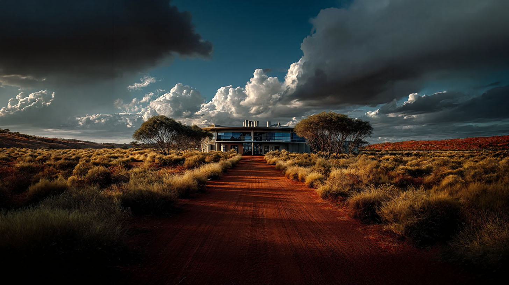
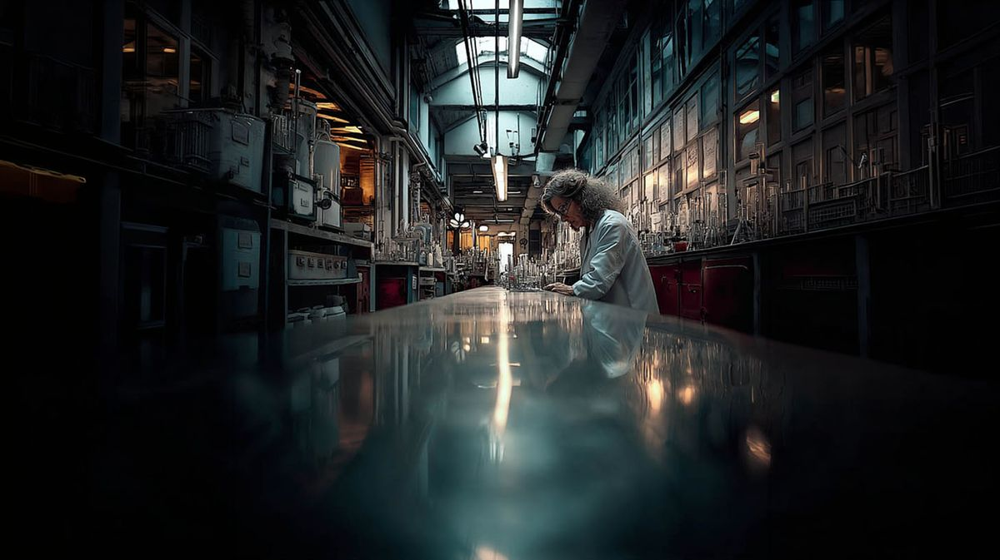
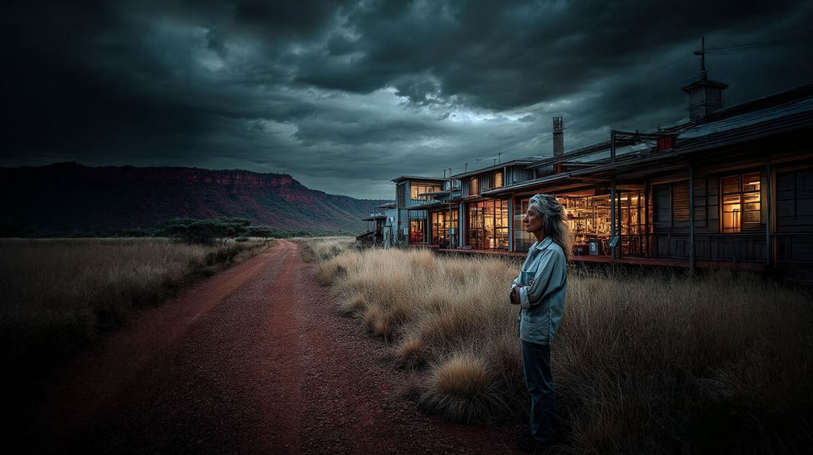
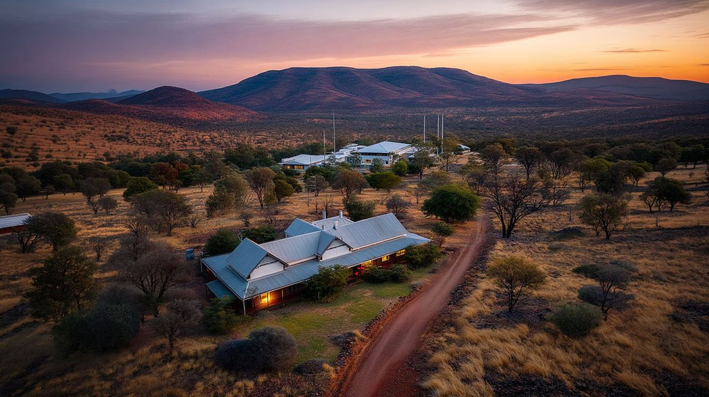
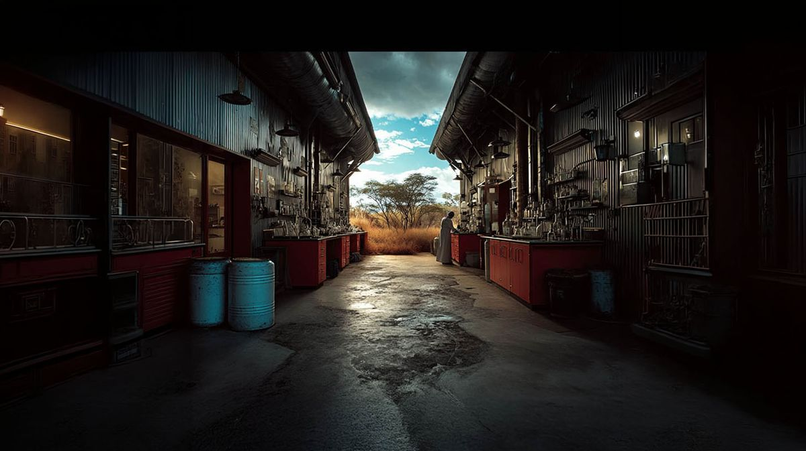

Dr. Elizabeth Ryker was not a conventional chemist. Often described by her peers as a "female Richard Feynman," she possessed an intensely playful and brilliantly chaotic mind that redefined our approach to industrial chemistry.
While many of her contemporaries preferred the sterile confines of metropolitan laboratories, Dr. Ryker built her world-class research facility deep in the red dirt of the Australian outback. She possessed a unique, rustic physicality; despite being tall and slender, she was rarely seen without dirt on her hands or chemical stains on her coat.
Her sudden and tragic passing in a vehicular accident was a monumental loss to the global scientific community. However, her numerous patents and the foundation she built alongside 'Pop' continue to fund critical environmental research to this day.




